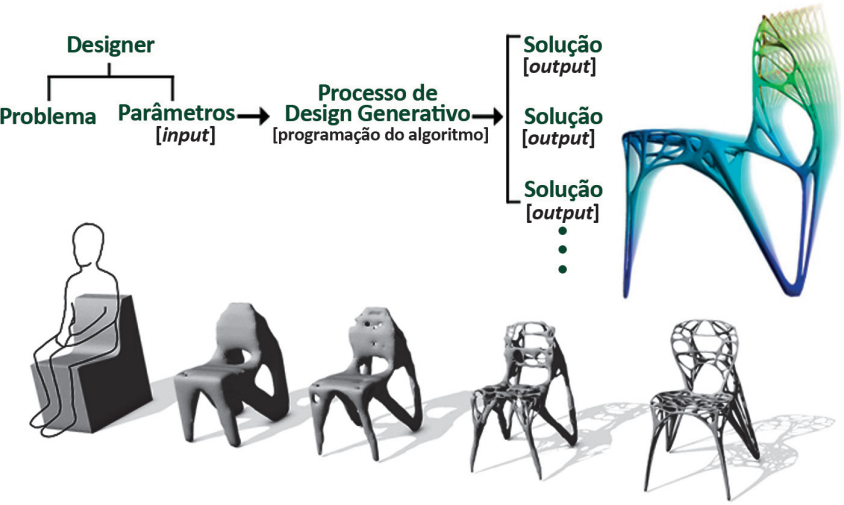

As tecnologias digitais utilizadas no desenvolvimento projetual deram origem a processos de design denominados como Design Generativo e/ou Design Paramétrico. Os novos processos de design ajudaram no surgimento de outra perspectiva no campo da metodologia projetual, que explora o uso de sistemas computacionais para processar conjuntos de informações parametrizadas para estudar e definir possíveis formas, volumes, composições e comportamentos, que sejam capazes de atender a determinadas necessidades em um projeto. Assim, a manipulação dos parâmetros pode ser utilizada para gerar variações, combinações e/ou mesclagem de elementos 2D, 3D, forma, cor, textura, volume, densidade, atmosfera, entre outras, como ilustra a figura a seguir.
LARANJEIRA, M. A.; MARAR, J. F.; PASCHOARELLI, L.; LANDIM, P. Design Generativo de Superfícies: uma análise do uso de programação para o desenvolvimento de estamparia. ModaPalavra e-periódico, Dossiê de Design de Superfície, 11. jan. 2018 (adaptado).
Projeto de design paramétrico para cadeira.
Disponível em: http://www.urukia.com/parametric-generico-chair-marco-hemmerling/. Acesso em: 19 jul. 2018 (adaptado).
Com base nas informações e na imagem apresentadas, relativas ao impacto no uso do Design Generativo e/ou Design Paramétrico no processo projetual, avalie as afirmações a seguir.